科技鬼屋：自戕宿舍
共同製作：周姵瑄、曾戈平、劉世寅、江鈺云、賀照文、薛晴
指導教授：黃心健、廖俊峰
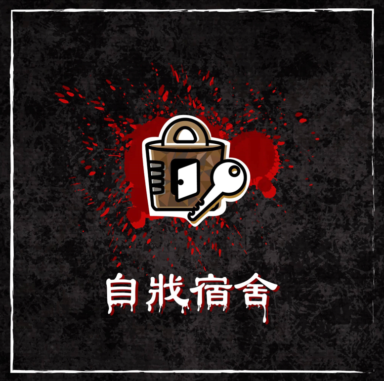
作品理念
自戕宿舍是結合數位技術結合現實物品打造的解謎密室逃脫遊戲。故事女主角是一名自殺的女大學生，玩家所扮演角色的是女主角的青梅竹馬，某日在準備回到自己宿舍時卻進入了女主角生前的宿舍房間，玩家要在逃脫過程中找到女主角想對玩家說的話。主要希望玩家透過故事內容，提醒人們更關心自己周遭的人；並應用現代科技，達到數位虛實的結合。
前導片：帶領玩家融入劇情
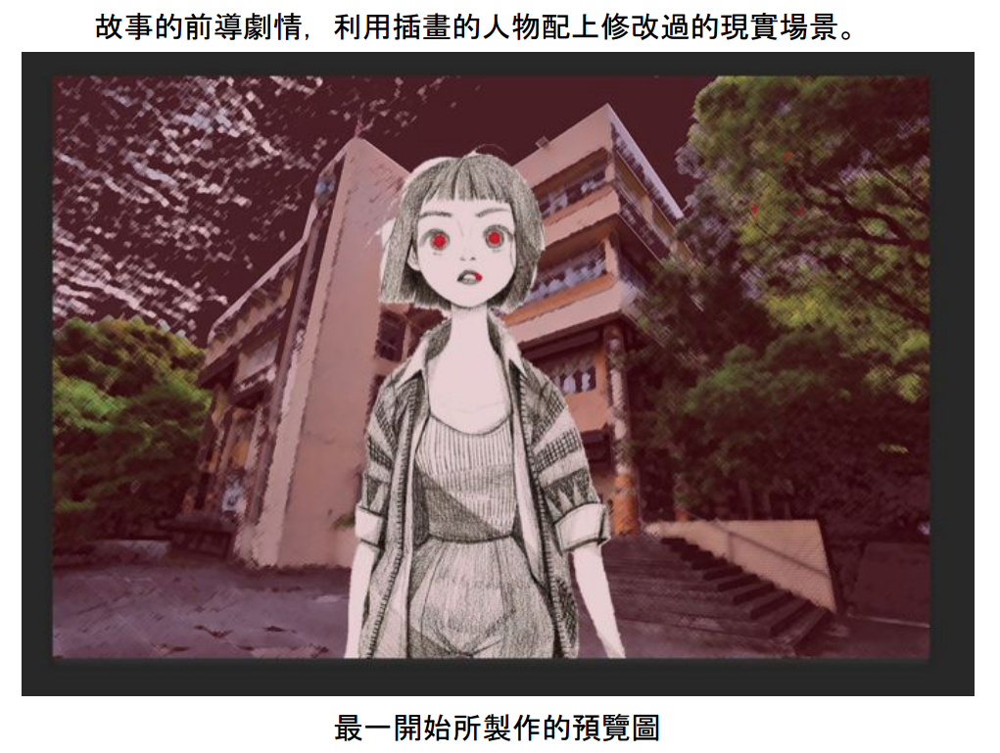
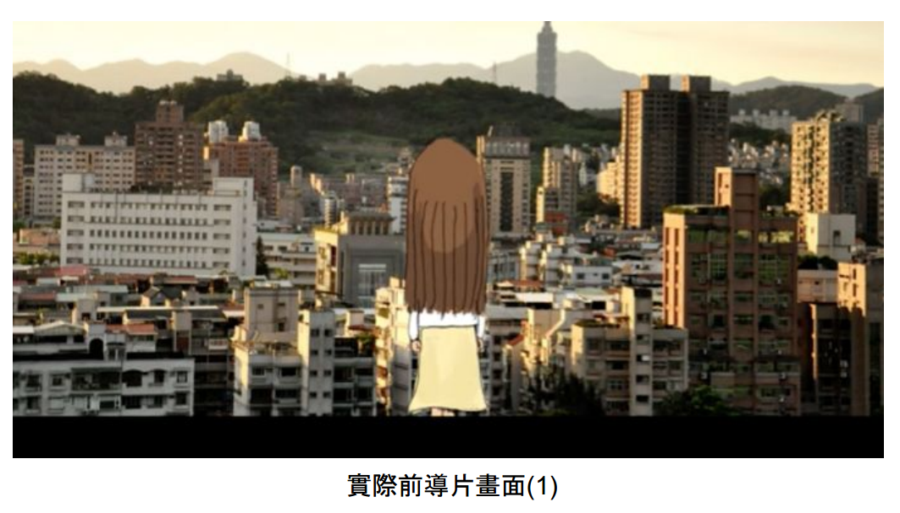
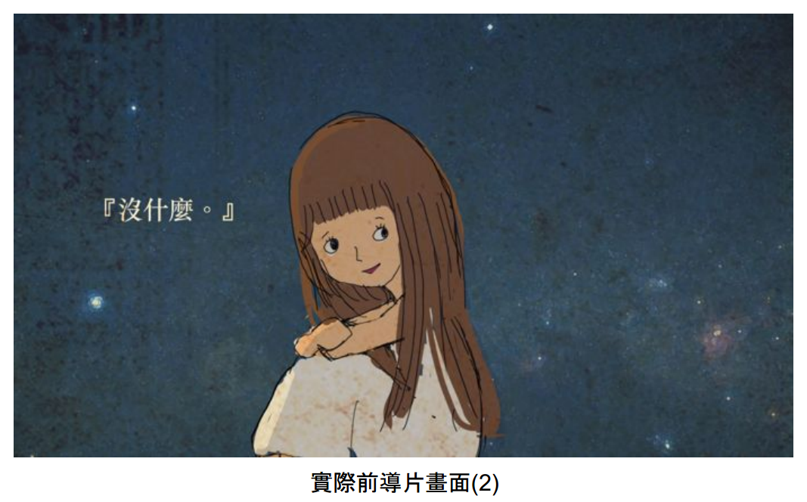
裝置
日記本
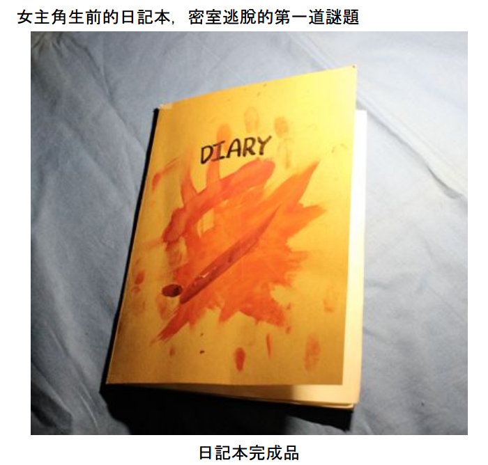
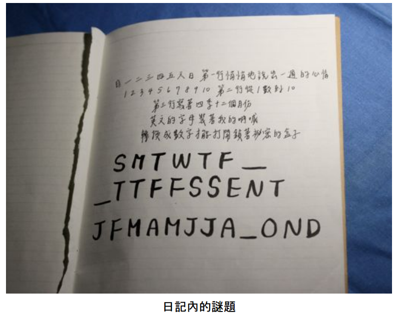
音樂盒：立體投影之應用
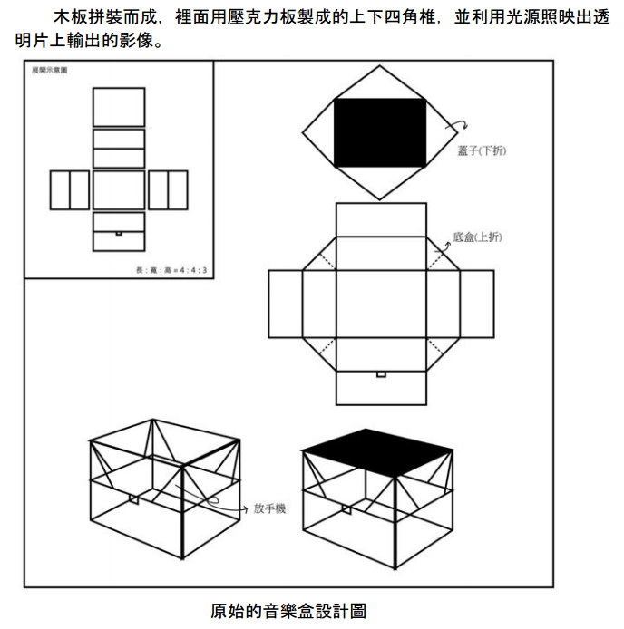
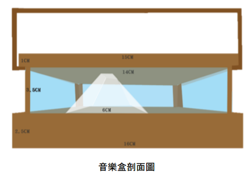
鏡子：運用Unity、Vuforia及網路攝影機，玩家在鏡子前舉起正確的圖像時便會撥放動畫。
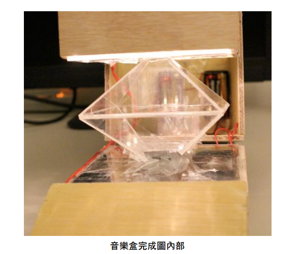
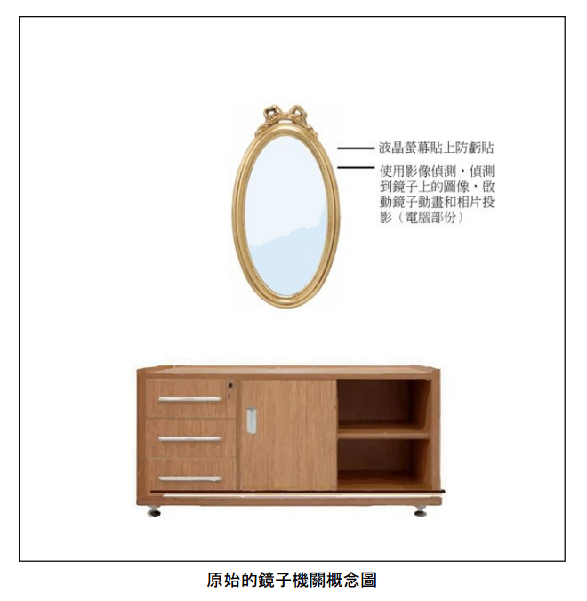
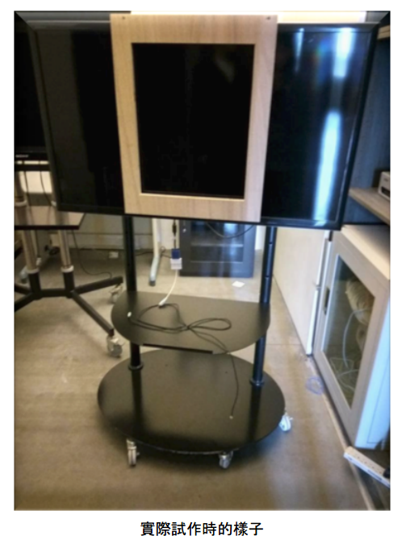
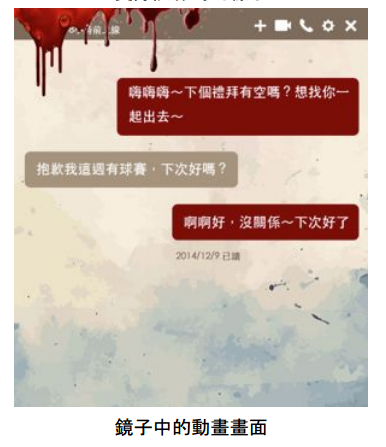
電腦：使用makey makey控制電腦撥放結局動畫
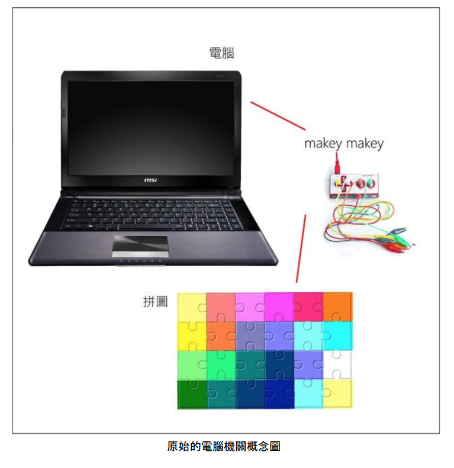
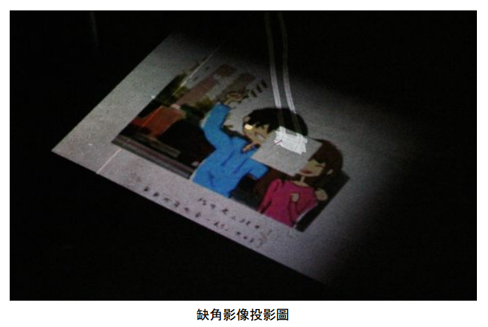
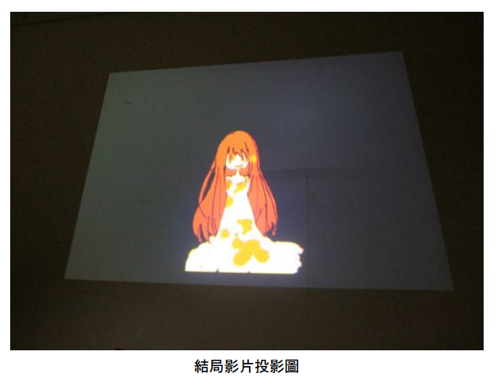
檯燈：將檯燈接上Arduino及程式，在旁邊小櫃的抽屜上安裝按鈕，當抽屜打開按鈕鬆開時，檯燈會直接關閉。
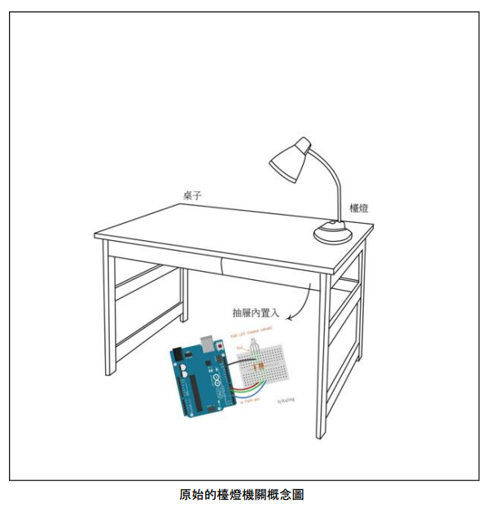
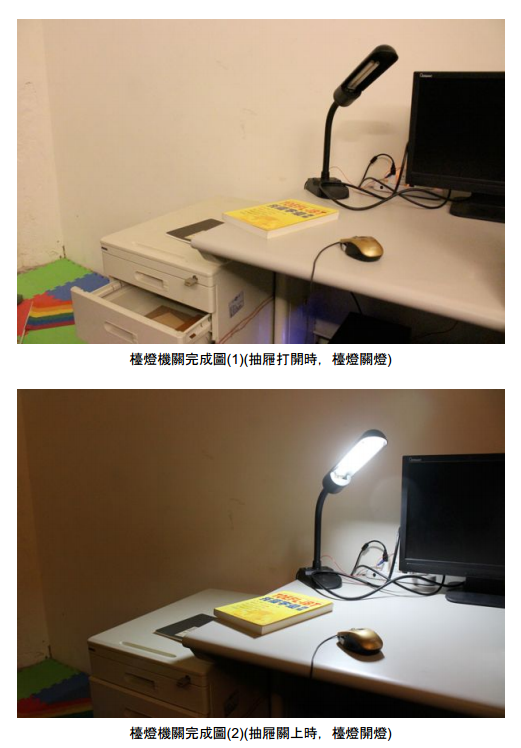
氣氛投影：放在高處的投影機，投出倒數計時的影片，當20分鐘播完時，則會進入另一個結局影片。
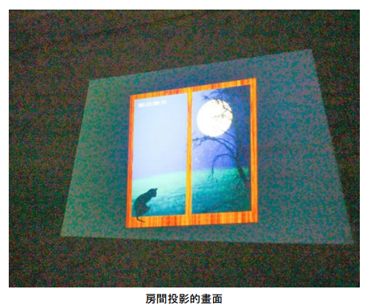
房間擺設
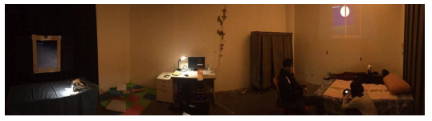
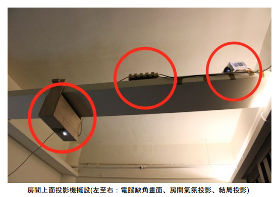
展覽實況
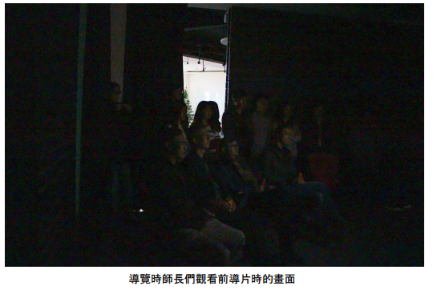
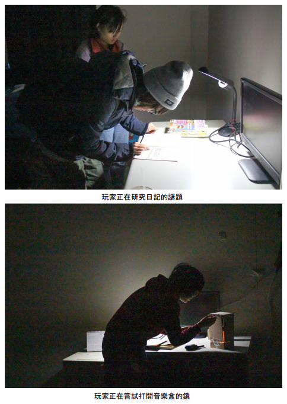
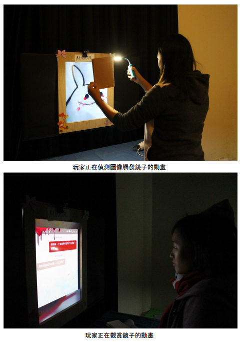
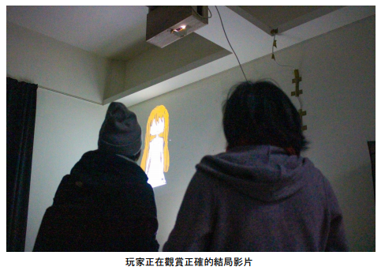